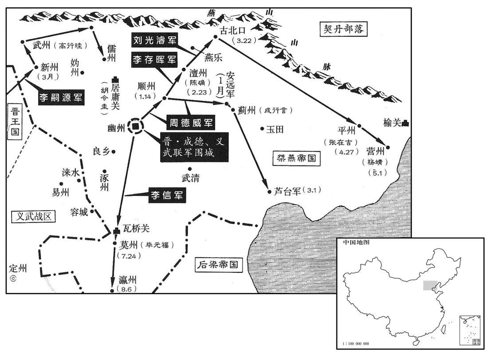
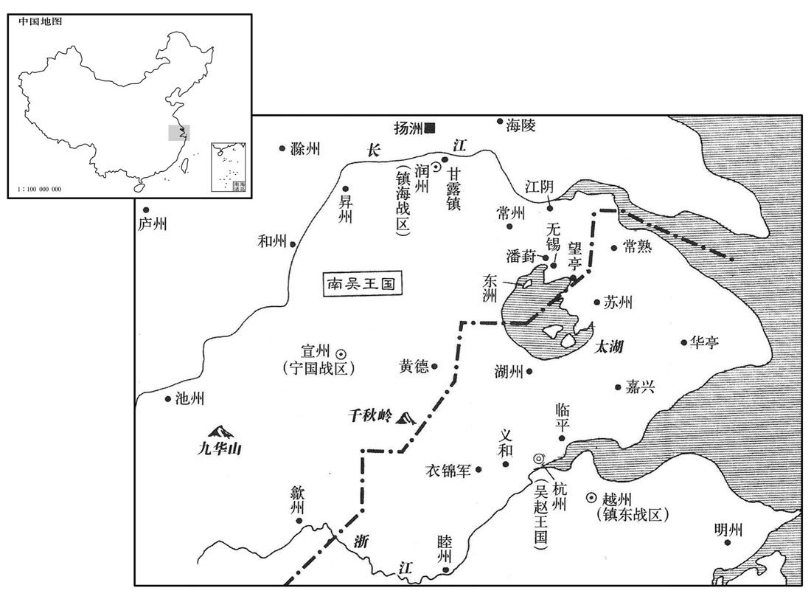
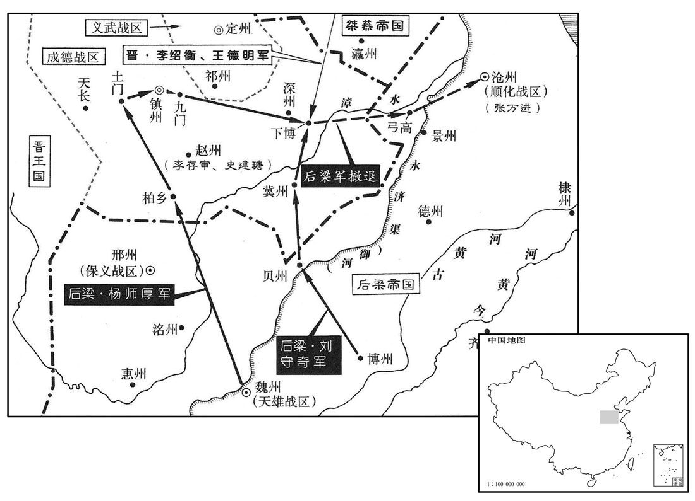
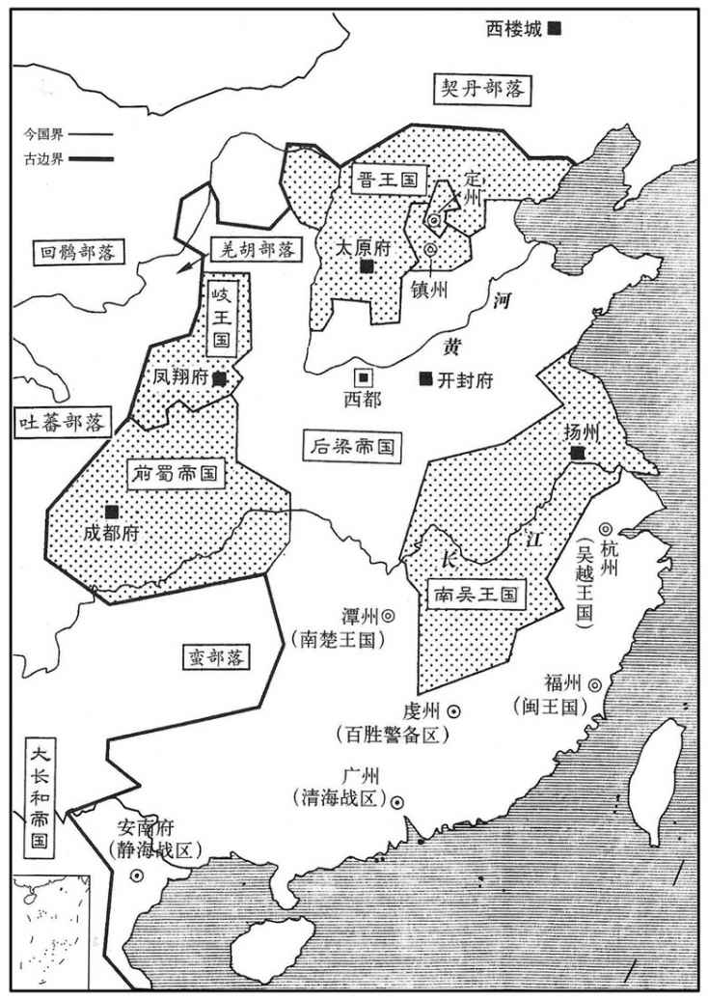
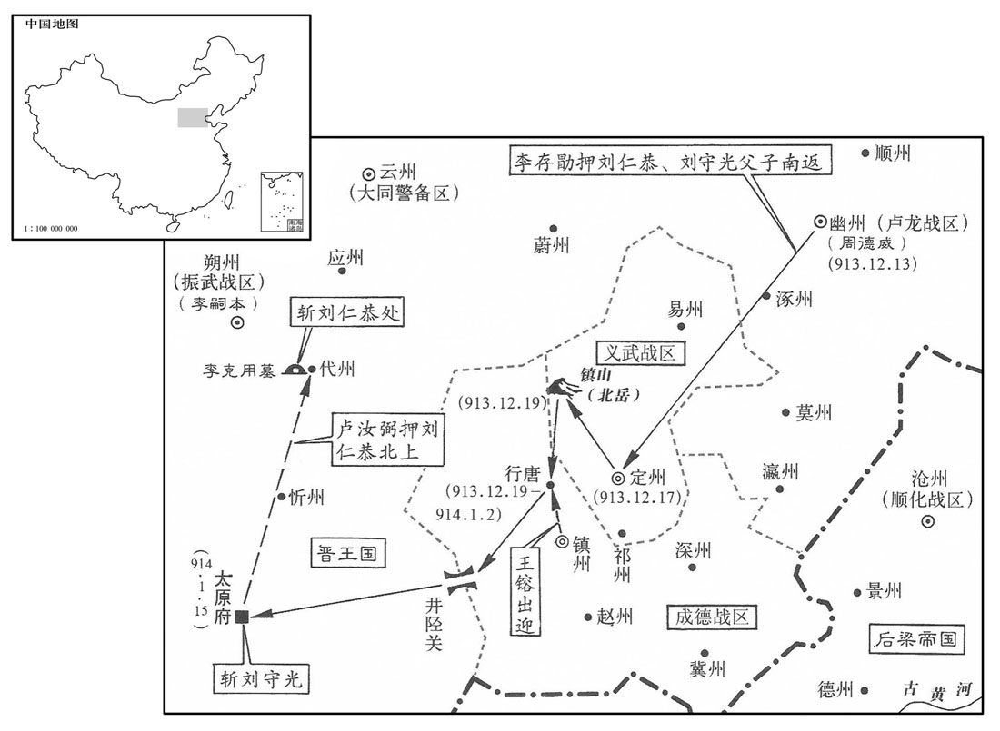

公元913年资治通鉴：本年记事、原文与白话对照
按原书编年位置阅读；追叙和史论不等于本年发生的事件。白话采用所据译本，缺译不以生成译文补齐。
卷269 · 本年记事
公元913年 · 后梁均王干化三年
干化三年〔（癸酉、九一三）〕
本年事件索引（现代整理）

本年形势与背景参考图

本年形势与背景参考图

本年形势与背景参考图

本年形势与背景参考图

本年形势与背景参考图
十二月，吴镇海节度使徐温、平卢节度使朱瑾帅诸将拒之，〔拒王景仁也。帅，读曰率。〕遇于赵步。〔赵步，濒淮津济之处，南直寿春紫金山。〕吴征兵未集，温以四千余人与景仁战，不胜而却。景仁引兵乘之，将及于隘，〔隘，乌介翻，险狭之处为隘。〕吴吏士皆失色，左骁卫大将军宛丘陈绍援枪大呼〔援，于元翻。呼，火故翻。〕曰：「诱敌太深，可以进矣。」〔诱，音酉。〕跃马还鬬，众随之，梁兵乃退。温拊其背曰：「非子之智勇，吾几困矣。」〔几，居依翻。〕赐之金帛，绍悉以分麾下。吴兵既集，复战于霍丘，梁兵大败；王景仁以数骑殿，吴人不敢逼。〔殿，丁练翻。王景仁本吴之名将，吴人素畏之，故不敢逼。〕梁之渡淮而南也，表其可涉之津；〔立表以记浅。〕霍丘守将朱景浮表于木，徙置深渊。〔朱景，霍丘土豪也，吴用以为将，守霍丘。浮表于木者，徙梁所立之表，其下接之以木，立诸深渊以误之。〕及梁兵败还，〔还，从宣翻。〕望表而涉，溺死者太半，吴人聚梁尸为京观于霍丘。〔观，古玩翻。〕
十二月，吴国镇海节度使徐温、平卢节度使朱瑾率领诸将抵御后梁王景仁，两军在赵步相遇。当时，吴国征集的士卒还未到齐，徐温率领着四千余士卒与王景仁交战。终因寡不敌众而战败退却。王景仁乘胜率兵追击，快追到险要的地方，吴国的官兵都吓得惊恐失色。这时，吴国的左骁卫大将军宛丘人陈绍举起枪来高声疾呼，说：“诱敌太深了，可以进攻了。”于是他跃上战马，回头还击后梁军，吴国的士卒也跟着他一起与后梁军作战，后梁军才撤退。事后徐温拍着陈绍的背说：“若不是你聪明勇敢，我们几乎就要陷入困境了。”于是赏赐给陈绍很多金帛，陈绍全部赏赐分给部下。吴国的军队征集起来以后，又与后梁军战于霍丘，结果后梁军大败，王景仁和几个骑兵走在队伍的后面，吴国的士卒不敢逼近。后梁军在渡过淮水向南撤退时，在水浅的渡津作了标志；吴军霍丘守将朱景将这些标志浮在木头上移到水深的地方。等到后梁军战败回逃的时候，都按照过河时设置的标志涉水渡河，结果被溺死的士卒有一半以上，吴国人把被溺死的后梁军尸体集中起来在霍丘封筑成高士家，以此来炫耀自己军队所取得的胜利。
庚午，晋王以周德威为卢龙节度使，兼侍中，以李嗣本为振武节度使。〔先是，周德威以破夹寨之功帅振武，今以平燕之功徙帅卢龙，以李嗣本代帅振武。欧史义儿传，嗣本本鴈门张氏子。〕
庚午（初三），晋王李存勖任命周德威为卢龙节度使兼侍中，任命李嗣本为振武节度使。
燕主守光将奔沧州就刘守奇，〔刘守奇藉兵于梁以取沧州，事见上卷上年。〕涉寒，足肿，〔史照曰：释名曰：肿，锺也，寒热气聚也。〕且迷失道，至燕乐之境，〔燕乐县，后魏置，治白檀古城。唐长寿二年徙治新兴城，属檀州。宋白曰：燕乐、密云二县皆汉虒奚县地。乐，音洛。〕昼匿坑谷，数日不食，令妻祝氏乞食于田父张师造家。师造怪妇人异状，诘知守光处，〔诘，去吉翻。〕并其三子擒之。癸酉，晋王方宴，将吏擒守光适至，王语之曰：〔语，牛倨翻。〕「主人何避客之深邪！」并仁恭置之馆舍，以器服膳饮赐之。王命掌书记王缄草露布，缄不知故事，书之于布，遣人曳之。〔魏、晋以来，每战胜则书捷状，建之漆竿，使天下皆知之，谓之露布。露布者，暴白其事而布告天下，未尝书之于布而使人曳之也。文心雕龙曰：露布者，盖露皮不封，布诸观听也。〕
燕主刘守光被周德威击败后，将要向南投奔沧州刘守奇，由于步行过河，水寒冷，脚肿了，而且迷失了道路，行至燕乐县境内时，白天藏匿在谷之中，好几天都没有吃上饭，就让他的妻子祝氏到老农张师造家讨饭。老农张师造觉得刘守光的妻子祝氏形状很怪异，盘问得知刘守光的住处，于是连刘守光的三个儿子一并捉拿起来，癸酉（初六），晋王正要举行宴会时，将吏把刘守光押送刚刚到达，晋王对他们说：“主人为什么要这样畏避客人呢？”于是将刘仁恭和刘守光一并安置到客舍，并赐给他们衣食用具。随后晋王又命令掌管书牍记录的官员王缄起草露布，晓示天下。王缄不知露布的旧例，便把情况书写在布匹上，派人拉着。
晋王欲自云、代归，〔自幽州取山后路，历云、代等州至晋阳。〕赵王镕及王处直请由中山、真定趣井陉，〔王处直，王镕欲晋王取道中山、真定，各展迎贺之礼。趣，七喻翻。〕王从之。庚辰，晋王发幽州，刘仁恭父子皆荷校于露布之下。〔荷，下可翻，又音何。校，爻教翻。易曰：荷校灭耳。注云：校者，以木绞校者也，即械也；校者取其通名也。〕守光父母唾其面而骂之曰：「逆贼，破我家至此！」守光俛首而已。〔俛，音免。〕甲申，至定州，舍于关城。丙戌，晋王与王处直谒北岳庙；〔北岳庙在恒山之大茂山；恒山在定州曲阳县西北。〕是日，至行唐，〔行唐，汉南行唐县，后魏曰行唐，唐属镇州。九域志：在州北五十五里。〕赵王镕迎谒于路。
晋王打算经过云州、代州回晋阳，赵王王熔和王处直请求经由中山、真定，并取道井陉返回晋阳，晋王听从了他们的意见。庚辰（十三日），晋王从幽州出发，刘仁恭父子都戴着枷锁在露布之下。刘守光的母亲和父亲将唾沫唾在他的脸上并骂他说：“逆贼，把我的家败坏到这种地步！”刘守光只是低着头而已。甲申（十七日），行至定州，住在关口的城楼里面。丙戌（十九日），晋王和王处直拜谒北岳庙。这一天，行至行唐，赵王王熔在路上迎接谒见了晋王。
译本中未与胡注本可靠对应的内容
以下另列供核对版本差异，不并入胡注本正文。
译本所附古文
[1]春，正月，丁巳，晋周德威拔燕顺州。
译本白话
春季，正月丁巳（十四日），晋周德威攻克燕之顺州。
译本所附古文
[2]癸亥，郢王友朝享太庙；甲子，祀圜丘，大赦，改元凤历。
译本白话
癸亥（十二日），郢王朱友朝谒祭祀太庙。甲子（二十一日），祭天，实行大赦，改年号为凤历。
译本所附古文
[3]吴陈璋攻荆南，不克而还，荆南兵与楚兵会于江口以邀之；璋知之，舟二百艘骈为一列，夜过，二镇兵遽出追之，不能及。
译本白话
吴淮南节度副使陈璋进攻荆南，没有攻克就返回，荆南军队与楚兵在荆江口会合来拦击。陈璋知道情况，把二百艘船并列连接成一列，夜间过江，荆南、楚二镇军队急忙冲出追赶，没能追上。
译本所附古文
[4]晋周德威拔燕安远军，蓟州将成行言等降于晋。
译本白话
晋周德威攻克燕之安远军，蓟州将领成行言等向晋投降。
译本所附古文
[5]二月，壬午，蜀大赦。
译本白话
二月壬年（初九），前蜀实行大赦。
译本所附古文
[6]郢王友既得志，遽为荒淫，内外愤怒，友虽啖以金缯，终莫之附。驸马都尉赵岩，之子，太祖之婿也，左龙虎统军、侍卫亲军都指挥使袁象先，太祖之甥也。岩奉使至大梁，均王友贞密与之谋诛友，岩曰：“此事成败，在招讨杨令公耳。得其一言谕禁军，吾事立办。”均王乃遣腹心马慎交之魏州说杨师厚曰：“郢王篡弑，人望属在大梁，公若因而成之，此不世之功也。”且许事成之日赐犒军钱五十万缗。师厚与将佐谋之，曰：“方郢王弑逆，吾不能即讨；今君臣之分已定，无故改图，可乎？”或曰：“郢王亲弑君父，贼也；均王举兵复仇，义也。奉义讨贼，何君臣之有！彼若一朝破贼，公将何以自处乎？”师厚曰：“吾儿误计。”乃遣其将王舜贤至洛阳，阴与袁象先谋，遣招讨马步都虞候谯人朱汉宾将兵屯滑州为外应。赵岩归洛阳，亦与象先密定计。
译本白话
郢王朱友得志以后，马上变得荒淫无度，引起朝内外愤怒，朱友虽用金帛引诱，但始终没有人依附他。驸马都尉赵岩是赵的儿子，后梁太祖的女婿。左龙虎统军、侍卫亲军都指挥使袁象先是后梁太祖的外甥。赵岩奉命出使到大梁，均王朱友贞秘密地与他谋划杀死朱友，赵岩说：“这件事的成败，操在都招讨使杨师厚令公手中。得他一句话晓谕禁军，我的事马上就办。”均王朱友贞于是派遣心腹马慎交到魏州劝导杨师厚说：“郢王朱友杀父篡位，众望专注在大梁均王朱友贞身上，您如果能够因此成功，这是非凡的功勋啊。”并且答应事成之日赏赐给他犒劳将士的钱五十万缗。杨师厚与将佐商议这件事，说：“当郢王杀父叛逆的时候，我不能立即讨伐；现在君臣名份已定，无故改变主意，可以吗？”有人说：“郢王亲自杀死君父，是贼；均王发兵复仇，是正义的。尊奉正义，讨伐逆贼，有什么君臣之分！他们如果一旦打败逆贼，您将怎么安顿自己呢？”杨师厚说：“我几乎打错算盘。”于是派遣他的部将王舜贤到洛阳，暗中与左龙虎统军、侍卫亲军都指挥使袁象先商量，派遣招讨马步都虞候谯人朱汉宾率兵驻守滑州作为外应。驸马都尉赵岩返回洛阳，也与袁象先秘密制定计策。
友治龙骧军溃乱者，搜捕其党，获者族之，经年不已。时龙骧军有戍大梁者，友征之，均王因使人激怒其众曰：“天子以怀州屯兵叛，追汝辈欲尽坑之。”其众皆惧，莫知所为。丙戌，均王奏龙骧军疑惧，未肯前发。戊子，龙骧将校见均王，泣请可生之路，王曰：“先帝与汝辈三十余年征战，经营王业。今先帝尚为人所弑，汝辈安所逃死乎！”因出太祖画像示之而泣曰：“汝能自趣洛阳雪仇耻，则转祸为福矣。”众皆踊跃呼万岁，请兵仗，王给之。
译本所附古文
朱友惩治龙骧军内逃散作乱的人，搜捕他们的余党，逮住的灭族，经历一年而不停。当时龙骧军有戍守大梁的，朱友召他们回洛阳，均王朱友贞于是派人激怒他们说：“天子因戍守怀州的龙骧军叛变，追查你们打算全部活埋。”龙骧军的兵众都很害怕，不知道怎么办。丙戌（十三日），均王奏报大梁的龙骧军怀疑恐惧，不肯起程。戊子（十五日），龙骧军将校进见均王，流着泪请求指示生存的道路，均王说：“先帝与你们三十余年南征北战，筹划经营帝王事业。现在先帝尚且被人杀死，你们到何处能够逃脱死亡呢！”于是拿出后梁太祖的画像给他们看，并且流着泪说：“你们能够自己奔赴洛阳报仇雪耻，就转祸为福了。”龙骧军兵众跳跃高呼万岁，请求发给兵器。均王发给了他们。
译本白话
庚寅旦，袁象先等帅禁兵数千人突入宫中。友闻变，与妻张氏及冯廷谔趋北垣楼下，将逾城，自度不免，令廷谔先杀妻，后杀己，廷谔亦自刭。诸军十余万大掠都市，百司逃散，中书侍郎、同平章事杜晓、侍讲学士李皆为乱兵所杀，门下侍郎、同平章事于兢、宣政使李振被伤。至晡乃定。
庚寅（十七日）早晨，袁象先等率领禁军数千人冲入宫中。朱友听说兵变，与妻子张氏及冯廷谔跑到北垣墙楼下，将要越过城墙，自己估计不能免死，命令冯廷谔先把妻子张氏杀死，后杀死自己，冯廷谔也自杀。诸军十余万人大肆抢掠市中财物，百官逃散，中书侍郎、同平章事杜晓和侍讲学士李都被乱兵杀死，门下侍郎、同平章事于兢和宣政使李振被打伤。直到太阳落山才安定下来。
象先、岩赍传国宝诣大梁迎均王，王曰：“大梁国家创业之地，何必洛阳！”乃即帝位于大梁，复称乾化三年，追废友为庶人，复博王友文官爵。
袁象先和赵岩带着传国宝玺前往大梁迎接均王朱友贞，均王说：“大梁是国家创立基业的地方，何必到洛阳去！”于是，在东都大梁即帝位，又把年号改为乾化三年，追废朱友为平民，恢复博王朱友文的官爵。
译本所附古文
[7]丙申，晋李存晖攻燕檀州，刺史陈确以城降。
译本白话
丙申（二十三日），晋将李存晖率兵攻打燕之檀州，檀州刺史陈确献城投降。
译本所附古文
[8]蜀唐道袭自兴元罢归，复为枢密使。太子元膺廷疏道袭过恶，以为不应复典机要，蜀主不悦。庚子，以道袭为太子太保。
译本白话
前蜀唐道袭从兴元罢免回成都，复任枢密使。太子王元膺在朝廷上逐条分列唐道袭的过失罪恶，以为不应当再掌管国家机密要事，前蜀主王建不高兴。庚子（二十七日），任命唐道袭为太子太保。
译本所附古文
[9]三月，甲辰朔，晋周德威拔燕卢台军。
译本白话
三月，甲辰朔（初一），晋周德威夺取燕之芦台军。
译本所附古文
[10]丁未，帝更名；久之，又名。
译本白话
丁未（初四），后梁帝均王朱友贞更名为；很久以后，又改名为。
译本所附古文
[11]庚戌，加杨师厚兼中书令，赐爵邺王，赐诏不名，事无巨细必咨而后行。
译本白话
庚戌（初七），后梁加官杨师厚兼中书令，赐爵邺王，赐诏不称名，事无大小一定要先咨询过他然后施行。
译本所附古文
[12]帝遣使招抚朱友谦；友谦复称藩，奉梁年号。
译本白话
后梁帝派遣使者招抚朱友谦；朱友谦又称藩镇，尊奉梁朝年号。
译本所附古文
[13]丙辰，立皇弟友敬为康王。
译本白话
丙辰（十三日），后梁帝立皇弟朱友敬为康王。
译本所附古文
[14]乙丑，晋将刘光浚克古北口，燕居庸关使胡令圭等奔晋。
译本白话
乙丑（二十二日），晋将刘光浚攻克古北口，燕之居庸关使胡令圭等投奔晋。
译本所附古文
[15]戊辰，以保义留后戴思远为节度使，镇邢州。
译本白话
戊辰（二十五日），后梁帝任命保义留后戴思远为保义节度使，镇守邢州。
译本所附古文
[16]燕主守光命大将元行钦将骑七千，牧马于山北，募山北兵以应契丹；又以骑将高行为武州刺史，以为外援。晋李嗣源分兵徇山后八军，皆下之；晋王以其弟存矩为新州刺史总之。以燕纳降军使卢文进为裨将。李嗣源进攻武州，高行以城降。元行钦闻之，引兵攻行；行使其弟行周质于晋军以求救，李嗣源引兵救之，行钦解围去。嗣源与行周追至广边军，凡八战，行钦力屈而降；嗣源爱其骁勇，养以为子。嗣源进攻儒州，拔之，以行为代州刺史。行周留事嗣源，常与嗣源假子从珂分将牙兵以从。从珂母魏氏，镇州人，先适王氏，生从珂，嗣源从晋王克用战河北，得魏氏，以为妾，故从珂为嗣源子，及长，以勇健知名，嗣源爱之。
译本白话
燕主刘守光命大将元行钦率领七千骑兵，在山北牧马，召募山北军队来接应契丹；又任命骑兵将领高行为武州刺史，以为外援。晋将李嗣源分兵巡行山后八军，全部攻克；晋王任命他的弟弟存矩为新州刺史总理山后八军。委任燕纳降军使卢文进为副将。李嗣源进攻武州，高行献城投降。元行钦听到高行投降，带兵攻打高行；高行派他的弟弟高行周到晋军营中作为人质，请求发兵援救。李嗣源带兵救援高行，元行钦解围离去。李嗣源与高行周追赶到广边军，总共打了八仗，元行钦力尽投降。李嗣源喜爱元行钦勇猛善战，收为养子。李嗣源进攻儒州，夺取州城，委任高行为代州刺史。高行周留下侍奉李嗣源，常与李嗣源养子李从珂分率牙兵随从左右。李从珂的母亲魏氏是镇州人，先嫁与王氏，生从珂，李嗣源随从晋王李克用在河北作战，得到魏氏，收为妾，所以从珂成为李嗣源的儿子；李从珂长大以后，以勇健善战知名，李嗣源非常喜欢他。
译本所附古文
[17]吴行营招讨使李涛帅众二万出千秋岭，攻吴越衣锦军。吴越王以其子湖州刺史传为北面应援都指挥使以救之，睦州刺史传为招讨收复都指挥使，将水军攻吴东洲以分其兵势。
译本白话
吴行营招讨使李涛率领二万军队从千秋岭出来，进攻吴越衣锦军。吴越王钱任命他的儿子湖州刺史钱传为北面应援都指挥使，率兵前去救援；睦州刺史钱传为招讨收复都指挥使，率领水军进攻吴东洲以分散吴军的兵势。
译本所附古文
[18]夏，四月，癸未，以袁象先领镇南节度使、同平章事。
译本白话
夏季，四月，癸未（十一日），后梁帝任命袁象先兼镇南节度使、同平章事。
译本所附古文
[19]晋周德威进军逼幽州南门，壬辰，燕主守光遣使致书于德威以请和，语甚卑而哀。德威曰：“大燕皇帝尚未郊天，何雌伏如是邪！予受命讨有罪者，结盟继好，非所闻也。”不答书。守光惧，复遣人祈哀，德威乃以闻于晋王。
译本白话
晋周德威率领大军进逼幽州南门，壬辰（二十日），燕主刘守光派遣使者给周德威送去书信，请求和解，言辞卑下悲哀。周德威说：“大燕皇帝还没有到南郊祭天，怎么屈居人下如此呢！我受天命讨伐有罪的人，结成同盟，继续友好，不是我所要听到的。”没有复信。刘守光畏惧，又派人前去祈求怜悯，周德威这才把此事向晋王报告。
译本所附古文
[20]千秋岭道险狭，钱传使人伐木以断吴军之后而击之，吴军大败，虏李涛及士卒三千余人以归。
译本白话
千秋岭道路险峻狭窄，钱传派人砍伐树木截断吴军的后路，然后发动攻击，把吴军打得大败，俘虏李涛及甲士步卒三千余人，带回杭州。
译本所附古文
[21]已亥，晋刘光浚拔燕平州，执刺史张在吉。五月，光浚攻营州，刺史杨靖降。
译本白话
已亥（二十七日），晋将刘光浚攻克燕之平州，捉住平州刺史张在吉。五月，刘光浚率兵进攻营州，营州刺史杨靖投降。
译本所附古文
[22]乙巳，蜀主以兵部尚书王锴为中书侍郎、同平章事。
译本白话
乙巳（初四），前蜀主王建任命兵部尚书王锴为中书侍郎、同平章事。
译本所附古文
[23]杨师厚与刘守奇将汴、滑、徐、兖、魏、博、邢、之兵十万大掠赵境，师厚自柏乡入攻土门，趣赵州，守奇自贝州入趣冀州，所过焚掠。庚戌，师厚至镇州，营于南门外，燔其关城。壬子，师厚自九门退军下博，守奇引兵与师厚会攻下博，拔之。晋将李存审、史建瑭戍赵州，后少，赵王告急于周德威。德威遣骑将李绍衡会赵将王德明同拒梁军。师厚、守奇自弓高渡御河而东，逼沧州，张万进惧，请迁于河南；师厚表徙万进镇青州，以守奇为顺化节度使。
译本白话
杨师厚与刘守奇率领汴州、滑州、徐州、兖州、魏州、博州、邢州、州的十万军队大肆虏掠赵地，杨师厚自柏乡进入攻击土门，指向赵州，刘守奇自贝州进入直指冀州，在南门外扎营，焚烧镇州城关厢。壬子（十一日），杨师厚自九门退兵到下博，刘守奇带兵与杨师厚会同进攻下博，将城夺取。晋李存审、史建瑭戍守赵州，兵少，赵王向周德威告急。周德威派遣骑将李绍衡会同赵将王德明一起抵御后梁军。杨师厚、刘守奇自弓高渡过御河向东进发，逼近沧州，张万进畏惧，请求迁往河南；杨师厚上表请调张万进镇守青州，任命刘守奇为顺化节度使。
译本所附古文
[24]吴遣宣州副指挥使花虔将兵会广德镇遏使涡信屯广德，将复寇衣锦军。吴越钱传就攻之。
译本白话
吴派遣宣州副指挥使花虔率领军队会同广德镇遏使涡信驻防广德，将要再次侵犯衣锦军。吴越钱传率兵前去攻打。
译本所附古文
[25]六月，壬申朔，晋王遣张承业诣幽州，与周德威议军事。
译本白话
六月，壬申朔（初一），晋王派遣张承业前往幽州，与周德威商议军事。
译本所附古文
[26]丙子，蜀主以道士杜光庭为金紫光禄大夫、左谏议大夫，封蔡国公，进号广成先生。光庭博学善属文，蜀主重之，颇与议政事。
译本白话
丙子（初五），前蜀主王建任命道士杜光庭为金紫光禄大夫、左谏议大夫，封蔡国公，进号广成先生。杜光庭学识渊搏，长于写作，王建推崇他，常与他商议政事。
译本所附古文
[27]吴越钱传拔广德，虏花虔、涡信以归。
译本白话
吴越钱传率兵攻克广德，俘虏花虔、涡信回归。
译本所附古文
[28]戊子，以张万进为平卢节度使。
译本白话
戊子（十七日），后梁任命张万进为平卢节度使。
译本所附古文
[29]辛卯，燕主守光遣使诣张承业，请以城降；承业以其无信，不许。
译本白话
辛卯（二十日），燕主刘守光派遣使者劝说张承业，请献城投降；张承业因他没有信用，不答应。
译本所附古文
[30]蜀太子元膺，喙龅齿，目视不正，而警敏知书，善骑射，性狷急猜忍。蜀主命杜光庭选纯静有德者使侍东官，光庭荐儒者许寂、徐简夫，太子未尝与之交言，日与乐工群小嬉戏无度，僚属英敢谏。
译本白话
前蜀太子王元膺，生就了一张公猪嘴，牙齿外露，眼睛斜视，但是机警灵敏，通晓诗书，善于骑马射箭，性情褊狭急躁，多疑残忍。蜀主王建命杜光庭选择学问纯正、性情安详、有德行的人，让他们侍奉太子。杜光庭推荐儒生许寂、徐简夫，太子与他们未曾交淡过，每天与乐工下人嬉戏玩耍，没有节制，属官没有人敢于劝谏。
秋，七月，蜀主将以七夕出游。丙午，太子召诸王大臣宴饮，集王宗翰、内枢密使潘峭、翰林学士承旨高阳毛文锡不至，太子怒曰：“集王不来，必峭与文锡离间也。”大昌军使徐瑶、常谦，素为太子所亲信，酒行，屡目少保唐道袭，道袭惧而起。丁未旦，太子入白蜀主曰：“潘峭、毛文锡离间兄弟。”蜀主怒，命贬逐峭、文锡，以前武泰节度使兼侍中潘炕为内枢密使。
秋季，七月，王建将要在七夕出去游玩。丙午（初六），太子王元膺召集诸王及文武大臣在一起设宴饮酒，集王王宗翰、内枢密使潘峭、翰林学士承旨高阳人毛文锡没有到，太子勃然大怒，说：“集王不来，一定是潘峭与毛文锡从中挑拨离间。”大昌军使徐瑶、常谦，一向为太子所亲近信任，依次斟酒劝饮之间，多次瞪少保唐道袭，唐道袭畏惧而起身。丁未（初七）早晨，太子入宫禀报王建说：“潘峭、毛文锡挑拨离间我们兄弟。”王建大怒，命将潘峭、毛文锡贬官放逐，任命前武泰节度使兼侍中潘炕为内枢密使。
太子出，道袭入，蜀主以其事告之，道袭曰：“太子谋作乱，欲召诸将、诸王，以兵锢之，然后举事耳。”蜀主疑焉，遂不出；道袭请召屯营兵入宿卫，许之。内外戒严。
译本所附古文
太子出宫以后，唐道袭入宫进见，王建把刚才这事告诉他，唐道袭说：“太子图谋作乱，想要召集诸将、诸王，用兵禁锢他们，然后发动叛乱罢了。”王建产生怀疑，于是七夕不出去游玩了。唐道袭请召驻防营兵进宫值宿警卫，王建应允。成都城内外戒备森严。 太子初不为备，闻道袭召兵，乃以天武甲士自卫，捕潘峭、毛文锡至，之几死，囚诸东宫；又捕成都尹潘峤，囚诸得贤门。戊申，徐瑶、常谦与怀胜军使严等各帅所部兵奉太子攻道袭。至清风楼，道袭引屯营兵出拒战；道袭中流矢，逐至城西，斩之。杀屯营兵甚众，中外惊扰。 太子王元膺开始没有做准备，听说唐道袭召集军队，于是带领天武甲士进行自卫，逮捕潘峭、毛文锡，打他们几乎至死，把他们囚禁在东宫里；又逮捕成都尹潘峤，把他囚禁在得贤门。戊申（初八），大昌军使徐瑶、常谦与怀胜军使严等各率自己所属的军队随从太子进攻唐道袭。到达清风楼，唐道袭带领驻防营兵出来抵御战斗。唐道袭被乱箭射中。追赶到城西，把唐道袭杀死，并杀死驻防营兵很多，成都城内外惊慌扰乱。
译本白话
潘炕言于蜀主曰：“太子与唐道袭争权耳，无他志也。陛下宜面谕大臣以安社稷。”蜀主乃召兼中书令王宗侃、王宗贺、前利州团练使王宗鲁，使发兵讨为乱者徐瑶、常谦等。宗侃等陈于西球场门，兼侍中王宗黯自大安门梯城而入，与瑶、谦战于会同殿前，杀数十人。瑶死，谦与太子奔龙跃池，匿于舰中。己酉。太子出就舟人丐食，舟人以告蜀主，亟遣集王宗翰往慰抚之；比至，太子已为卫士所杀。蜀主疑宗翰杀之，大恸不已。左右恐事变，会张格呈慰谕军民榜，读至“不行斧钺之诛，将误社稷之计”，蜀主收涕曰：“朕何敢以私害公！”于是下诏废太子元膺为庶人。宗翰奏诛手刃太子者，元膺左右会诛死者数十人，贬窜者甚众。
内枢密使潘炕向前蜀主王建进言说：“太子只是与唐道袭争夺权力罢了，没有其他心思。陛下应该当面告谕诸王文武大臣来安定国家。”王建于是召兼中书令王宗侃、王宗贺及前利州团练使王宗鲁，命他们发兵讨伐发动叛乱的徐瑶、常谦等人。王宗侃等在西球场门列阵，兼侍中王宗黯自大安门攀梯登城，进入宫内，与徐瑶、常谦在会同殿前面进行战斗，杀死数十人。徐瑶战死，常谦与太子逃奔龙跃池，隐藏在战船中。己酉（初九）早晨，太子从战船中出来，向船夫讨饭吃，船夫把这事报告王建，王建急忙派遣集王王宗翰前去慰问安抚。来到龙跃池时，太子已被卫士杀死。王建怀疑是王宗翰杀了太子，痛哭不止。官员们担心发生事变，恰巧同平章事张格进呈“慰谕军民”，读到“不对悖逆作乱的人实行杀戮，将要贻误国家的大计”时，王建止住涕泪说：“朕怎么敢因私情危害国家公事！”于是，颁布诏书，废黜太子王元膺为平民。王宗翰奏请把亲手杀死太子的人斩首，结果王元膺左右有几十个人被杀，降职流放的人很多。
庚戌，赠唐道袭太师，谥忠壮；复以潘峭为枢密使。
庚戌（初十），前蜀主追赠唐道袭为太师，谥号忠壮，又任命潘峭为枢密使。
译本所附古文
[31]甲子，晋五院军使拔莫州，擒燕将毕元福。八月，乙亥，李信拔瀛州。
译本白话
甲子（二十四日），晋五院军使李信攻克莫州，生擒燕将毕元福。八月乙亥（初六），李信攻克瀛州。
译本所附古文
[32]赐高季昌爵勃海王。
译本白话
后梁帝赐高季昌爵为勃海王。
译本所附古文
[33]晋王与赵王熔会于天长。
译本白话
晋王与赵王王熔在天长会见。
译本所附古文
[34]楚宁远节度使姚彦章将水军侵吴鄂州，吴以池州团练使吕师造为水陆行营应援使，未至，楚兵引去。
译本白话
楚宁远节度使姚彦章率领水军侵犯吴鄂州，吴任命池州团练使吕师造为水陆行营应援使，还没有到达，楚兵退走。
译本所附古文
[35]九月，甲辰，以御史大夫姚洎为中书侍郎、同平章事。
译本白话
九月甲辰（初五），后梁任命御史大夫姚洎为中书侍郎、同平章事。
译本所附古文
[36]燕主守光引兵夜出，复取顺州。
译本白话
燕主刘守光带领军队在夜里出击，向晋夺回顺州。
译本所附古文
[37]吴越王遣其子传、传及大同节度使传瑛攻吴常州，营于潘葑。徐温曰：“浙人轻而怯，”帅诸将倍道赴之。至无锡，黑云都将陈言于温曰：“彼谓吾远来罢倦，未能决战，请以所部乘其无备击之。”乃自他道出敌后，温以大军当其前，夹攻之，吴越大败，斩获甚众。
译本白话
吴越王钱派遣他的儿子钱传、钱传及大同节度使钱传瑛进攻吴常州，在无锡县潘葑扎营。徐温说：“浙人轻浮而且怯懦。”率领诸将日夜兼程赶路奔赴常州。到达无锡时，黑云都将陈向徐温进言说：“他们以为我军远道而来一定疲乏劳倦，不能进行决战，请准带领部下乘他们没有戒备攻击他们。”于是从别的道路绕到敌人后面，徐温带领大军挡在吴越军队的前面，前后夹攻，把吴越军打得大败，杀死俘获吴越兵很多。
译本所附古文
[38]高季昌造战舰五百艘，治城堑，缮器械，为攻守之具，招聚亡命，交通吴、蜀，朝廷浸不能制。
译本白话
荆南节度使高季昌制造战船五百艘，修挖城垣壕沟，整治铠甲器械，作为进攻守卫的工具，招集逃亡在外的人，交结吴、蜀，后梁朝廷渐渐不能控制。
译本所附古文
[39]冬，十月，己巳朔，燕主守光帅众五千夜出，将入檀州；庚午，周德威自涿州引兵邀击，大破之。守光以百余骑逃归幽州，其将卒降者相继。
译本白话
冬季，十月己巳朔（初一），燕主刘守光率领五千兵众在夜里出发，将要进入檀州；庚午（初二），周德威自涿州带兵拦击，把燕兵打得大败。刘守光带领一百多骑兵逃回幽州，他的将领兵卒投降的接连不断。
译本所附古文
[40]蜀潘炕屡请立太子，蜀主以雅王宗辂类己，信王宗杰才敏，欲择一人立之。郑王宗衍最幼，其母徐贤妃有宠，欲立其子，使飞龙使唐文讽张格上表请立宗衍。格夜以表示功臣宗王侃等，诈云受密旨，众皆署名。蜀主令相者视诸子，亦希旨言郑王相最贵。蜀主以为众人实欲立宗衍，不得已许之，曰：“宗衍幼懦，能堪其任乎”甲午，立宗衍为太子。受册毕，潘炕以朝廷无事，称疾请老，蜀主不许；涕泣固请，乃许之。国有大疑，常遣使就第问之。
译本白话
前蜀潘炕屡次请求立太子。前蜀主王建认为雅王王宗辂很像自己，信王王宗杰才思敏捷，想要选择一人立为太子。郑王王宗衍年龄最小，他的母亲徐贤妃深受蜀王宠爱，想要立自己的儿子，派飞龙使唐文示意同平章事张格上表请立王宗衍。张格在夜里把写好的表章给功臣王宗侃等看。欺骗他们说是承受了蜀主的密旨，众人都署了名。前蜀主让相面的人观察各个儿子的面貌，相面人也迎合所谓密旨说郑王相貌最尊贵。前蜀主以为众人确实想要立王宗衍为太子，不得已答应了他们，说：“王宗衍年幼懦弱，能够胜任他的职务吗？”甲午（二十六日），立王宗衍为太子。受册完毕，潘炕以朝廷没有什么事情，声称有病，请求告老辞官，王建不准许；潘炕流着眼泪坚决请求，才答应了他。国家有了大的疑难事情，常派遣使者到他家里请教。
译本所附古文
[41]岭南节度使刘岩求婚于楚，楚王许以女妻之。
译本白话
岭南节度使刘岩向楚王求婚，楚王马殷应允把女儿嫁给他。
译本所附古文
[42]卢龙巡属皆入于晋，燕主守光独守幽州城，求援于契丹；契丹以其无信，竟不救。守光屡请降于晋，晋人疑其诈，终不许。至是，守光登城谓周德威曰：“俟晋王至，吾则开门泥首听命。”德威使白晋王。十一月，甲辰，晋王以监军张承业权知军府事，自诣幽州，辛酉，单骑抵城下，谓守光曰：“朱温篡逆，余本与公合河朔五镇之兵兴复唐祚。公谋之不臧，乃效彼狂僭。镇、定二帅皆俯首事公，而公曾不之恤，是以有今日之役。丈夫成败须决所向，公将何如？”守光曰：“今日俎上肉耳，惟王所裁。”王悯之，与折弓矢为誓，曰：“但出相见，保无他也。”守光辞以他日。
译本白话
卢龙节度使的管辖属地都被晋占有，燕主刘守光独自据守幽州城，向契丹请求救援。契丹认为他没有信用，终于没有救援。刘守光多次向晋请求归降，晋人怀疑他欺诈，始终不接受他投降。到这时，刘守光登上城楼，对周德威说：“等晋王到了，我就打开城门，伏首听命。”周德威派遣使者禀报晋王。十一月甲辰（初六），晋王任命监军张承业暂且主持军府事务，自己亲往幽州。辛酉（二十三日），晋王单骑到达幽州城下，对刘守光说：“朱温篡唐叛逆，我本想与您会合河朔五镇的军队共同兴复唐室的国运。您图谋不善，竟然效法朱温狂妄僭越。镇州王熔、定州王处直二帅，都驯服恭顺地侍奉您，然而您却从来不体恤他们，所以才有今天这场战斗。男子汉无论成功还是失败，必须决定去向，您将要怎么办？”刘守光说：“今天我是砧板上的肉罢了，只听大王裁决。”晋王怜悯刘守光，与他折断弓箭起誓，说：“只要您出城相见，我保证没有别的事情。”刘守光用改换他日来推托。
先是，守光爱将李小喜多赞成守光之恶，言听计从，权倾境内。至是，守光将出降，小喜止之。是夕，小喜逾城诣晋军，且言城中力竭。壬戌，晋王督诸军四面攻城，克之，擒刘仁恭及其妻妾，守光帅妻子亡去。癸亥，晋王入幽州。
在这以前，刘守光的爱将李小喜多佐助促成刘守光的恶行，刘守光对李小喜言听计从，李小喜的权势倾动境内。到这个时候，刘守光将要出城投降，李小喜止住了他。这天晚上，李小喜越过城墙，前往晋军投降，并且说幽州城内已经力量用尽。壬戌（二十四日），晋王李存勖统率诸军从四面同时攻城，夺取了幽州城，擒获刘仁恭及他的妻妾，刘守光带着妻子儿女逃走。癸亥（二十王日），晋王进入幽州。
译本所附古文
[43]以宁国节度使王景仁为淮南西北行营招讨应接使，将兵万余侵庐、寿。
译本白话
后梁任命宁国节度使王景仁为淮南西北行营招讨应接使，率领军队一万余人进攻庐州、寿州。